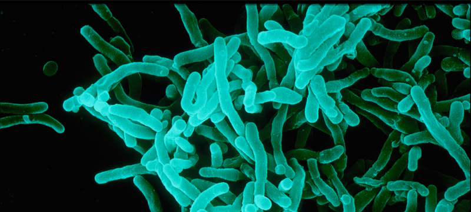
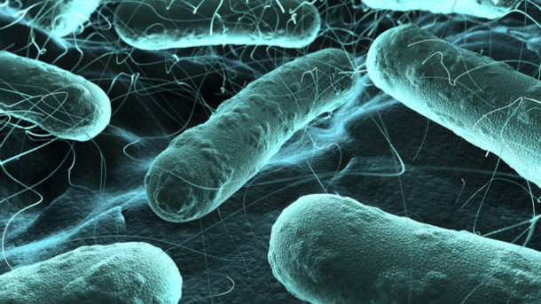

Pills & Pathogens
Antibiotics, their consumption in Europe and their resistant bacteria
References
Antibiotic Consumption
Antibiotic Resistance
Introduction
×
Antibiotic families
Individual antibiotics
References
 
Concept & Design
Shan Li Nio,
University of Amsterdam
(6222420)
Research
Centre for Disease Dynamics, Economics & Policy
World Health Organization
Data (2013)
Antibiotics info
Nature Reviews Drug Discovery, Kim Lewis (2013)
Bacteria info
Wikipedia
References
Antibiotic Consumption
Antibiotic Resistance
Introduction
Minor Programmeren